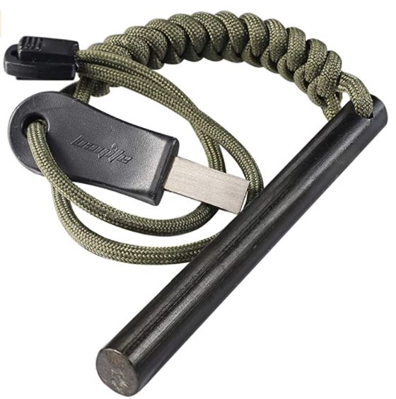

7 Natural Hot springs in and around Arizona
It's always a great option to visit one of the hot springs in Arizona.
There are about 12 natural hot springs in Arizona. These hot springs will help you calm down from a very busy week or from a very hectic morning
Here is a map of the available hot springs on the west side of the United States

Arizona Hot Springs
- Distance of the trail
- What is the total elevation?
- How difficult is the trail?
- Safety In Mind
- How much time to hike?
- Water
- Food
- Bring Layers
- Tools for navigation
- Protection from the sun
- Emergency Pack
Verde Hot Spring, Camp Verde
- Camping
- Backpacking
- Chilling
- River
- Swimming
- Scenic
- Wildlife
- River
- Fishing
Kaiser Hot Springs
Castle Hot Springs, Phoenix
- WILD WEST SHOOTING
- Mountain E-Bikes
- Hiking Trails
- Archery
- Spa Treatments
- Horseback Riding
El Dorado Hot Springs
- Rv camping
- Tent Camping
- Massages
- Bunking
Essence of Tranquility Hot Springs
- Hot Tub #1
- Hot Tub #2
- Hot Tub #3
- Hot Tub #4 and #5
- Hot Tub #6
Hot Well Dunes Hot Springs
Safford, AZ 85546

These hot springs are located just south of the Hoover Dam and along the Colorado river. You have the options of either hiking to the location from a 5.8 mile hike or get there by boat
The Arizona hot springs is a hot spring that has a boiling temperature. This is why it is in the number one spot on this list. The Arizona hot springs has a temperature of around 111° to 120°.
Details about the Arizona Hot Springs Trails
The trail has a distance of 5.8 miles.
There is a total elevation of 900 feet in this location.
According to the NPS website, the trail has a difficulty level of very strenuous.
The springs here are closed during the summer due to the water's temperature getting up to 120°.
It is roughly 6 to 7 hours to hike this location roundtrip. That is including time you need to enjoy the springs.
Bring these on an Arizona Spring hike
When going on a hike to get to the arizona springs, it's always best to treat the hike like any other long hike you would go on.
Water is one of the most if not the most important thing to bring on any hike. Bring enough water to serve throughot the day and also bring a water filter so you can fill up at the river if you run out somehow.
Here is a great water filter bottle to bring on your hike.
Brita Plastic Water Filter Bottle, 26 Ounce 1, Sea Glass
This water bottle has a filter that reduces the taste of chlorine with every sip ypu take. You should replace the water bottle filter for every 40 gallons of water that gets used in it or just every two months. This is perfect for your trip to one of the arizona hot springs.
Just as much as how water is important, food is important. Bring enough food to last you the entire trip.
The hot springs are in the desert and the temperature in the desert is known to fluctuate by a lot. Be sure to bring enough layers to be safe.
Bring a map with you to the location. It is always best to be on the safe side.
Remember that this is a desert location, the sun will get very hot mostly around the 12pm time. Bring sunblock and the proper head covering.
Pack a first aid kit to be on the safe side. You could also bring a fire starter if the worst do happen.
4 Inch Survival Ferrocerium Drilled Flint Fire Starter
This fire starter comes equipped with a 9ft Paracord. The striker is made from TOOL GRADE HSS STEEL and will give you enough strikes to survive the outdoors.
This item is good for Hiking, Bushcraft, Hunting, EDC, Fishing, Emergency, and BBQ. It costs $12.95 on amazon and could be the best give for anyone who loves the outdoors.
Location: 8375 AZ-179, Camp Verde, AZ 86322

Verde Hot Spring is a 2.5 mile reasonably trafficked out as well as back route situated near Strawberry, Arizona that includes some hot springs. The route has a variety of activity choices and you are also able to get here all year round. Dogs are likewise able to utilize this path however should be kept on their leash.
The Verde Hot Springs has an elevation of 190ft. The difficulty level getting to this location is rated at 2 out of 5 which is not hard. Be prepared to use 2 hours to complete a roundtrip to and from this location. The distance you will travel on this roundtrip will be roughly 3.2 miles.
How many hot springs are at the Verde Hot Springs?
The Verde Hot Springs has a total of 2 hot springs. Thereb is one at the art gallery location that gets up to 102° and then there is another one located near the river that gets up to 99°.
Tip
Dogs are welcome to visit the springs but are not allowed to get in.
Activities at or close by
There are many activities you can do while visiting this location. Here is a list of the ones you might want to try.
Location: Wikieup, AZ 85360

The Kaiser Hot Spring is a primitive type hot spring. It is located in Warm Springs Canyon. It is said that clothing is optional here but do not take my word for it.
To hike down from the canyon to the hot springs is roughly 1.5 miles each way. The hot spring here gets up to 99°.
Kaiser Hot Spring Map

5050 N Castle Hot Springs Rd, Morristown, AZ 85342.

Going down a dirty roadway you will certainly discover the wonderful as well as rich sanctuary of the Castle Hot Springs. Whether you're aiming to relax in the hot springs or to go on a journey in the Sonoran Desert, the comprehensive experience takes you on an unforgettable trip as well as you'll be left feeling far better than when you got here.
Activities Available
There are many activities to be had here for you to take pleasure in throughout your stay at this hot spring resort. From reaching brand-new elevations on the Via Ferrata adventure course or to sampling your way through a very informative ranch tour.
You can meet employees under their Ol' Salt Cedar Tree to enjoy shooting a replica .177 pellet gun. These pellet guns were some of the most iconic guns used in the late 1800s.
You will be able to ride on the trails in the location. you will also be provided with guides to make your rides more enjoyable.
There are over 8 hiking trails available in this location. Bring a camera to enjoy the wide-open views and the beautiful desert.
Visit the canyon archery range and practice your perfect shot.
Visit the creekside massage cabana to enjoy a relaxing spa treatment that will melt your stress away.
Enjoy a nice stroll on the back of horses through the beautiful canyons. You will have so-called cowboys leading the way to give the feel of the old west.
41225 Indian School, Tonopah, AZ

This is another privately owned hot spring. The temperature here gets up to 107°. You will also have the option opf choosing between public or private pools.
There are fun activities for you to have while you are here.
Tonopah also mean "hot water under the bush". The El Doradoh Hot Springs is located roughly 1.5 miles away from Tonopah.
6074 S Lebanon Loop Rd, Safford, AZ 85546

Located in the south eastern part of Arizona, this is a great hot spring to visit. You will have the choice between 6 hot springs and at least one of these springs get up to 105°.
The Essence of Tranquility hot springs will give you the option between different temperatures.
This one is known as the Waterfall Room and is 103° and is a private room.
The second hot tub is called the Cave and is 102°.
Known as the Blue Lagoon, this hot tub gets up to 98°, it is open and communal.
Known as the Asian Trek and the Greek Vacation respectively, they both come in at 104°.
This one is called Island Escape and it gets up to 105°.

This is a hidden gem that can be found in the Southern desert area of Arizona. This hot spring is off road and will definitely please anyone who loves going off-road. This hot spring has gated tubs and is in the middle of over 2000 acres of off-road trails.

Area at a glance
| Fees/Night | Free |
| Nearby City | Safford |
| Seasonal? | All year round |
| Any Fishing | No |
| Type of reservation | First-come, first-served |
Subscribe
Stay updated with our newsletter
Conclusion
The hot springs in Arizona will make anyone feel relaxed or at home. We are here on this earth to enjoy the many givens of nature and hot springs are one of the best things that was created. They offer relaxation which we as humans need after a bad week at work or just to unwind. Make the trip to one of these Arizona hot springs and bring back memories and stories to friends and family..